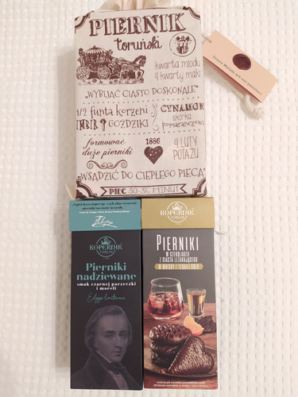
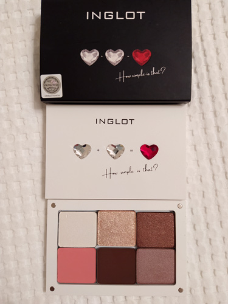
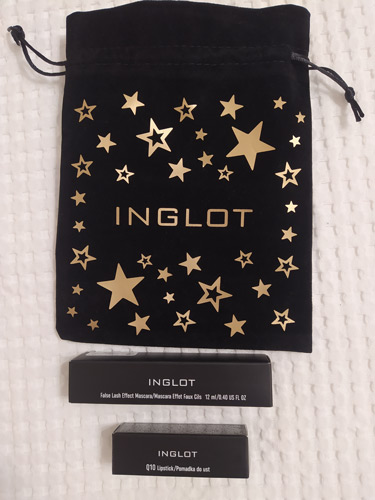

Przedstawiamy prezenty....
Drodzy Mikołajowie! Połączcie przyjemne z pożytecznym!
Serdecznie zapraszamy do zakupów online, opłata za pośrednictwem eSkarbonki wolontariuszki naszego sztabu (Visa, Mastercard, Maestro, Paypal).
Całkowity dochód ze sprzedaży przeznaczony będzie na cele 30. Finału WOŚP, czyli zakup sprzętu dla zapewnienia najwyższych standardów diagnostyki i leczenia wzroku u dzieci.
! Odbiór Ambasada RP, Bolshoy Tishinsky Pereulok. Telefon kontaktowy +7 916 465 06 67
Opłata za towary za pośrednictwem eSkarbonki przy odbiorze!
eSkarbonka obsługuje wszystkie karty Visa i MastercardCeny PLN
Zestaw pierników toruńskich
Zestaw 2 opakowań
w lnianym woreczkuPierniki nadziewane o smaku moreli
i czarnej porzeczki
Pierniki o smaku whisky i tequili50 PLN
Opłata przy odbiorze!
Kosmetyki INGLOT
Zestaw cieni do powiek INGLOT Freedom SystemZestaw 6 cieni do powiek
w opakowaniu dekorowanym
kryształkami Swarovskiego.
120 PLNOpłata przy odbiorze!
INGLOT Zestaw prezentowySzminka Q10 Lipstick, kolor 48 More than Red
oraz czarny tusz do rzęs False Lash Effect Mascara.
Wszystko zapakowane w ozdobny czarny, aksamitny woreczek że złotym napisem.
120 PLNOpłata przy odbiorze!
Kontakt